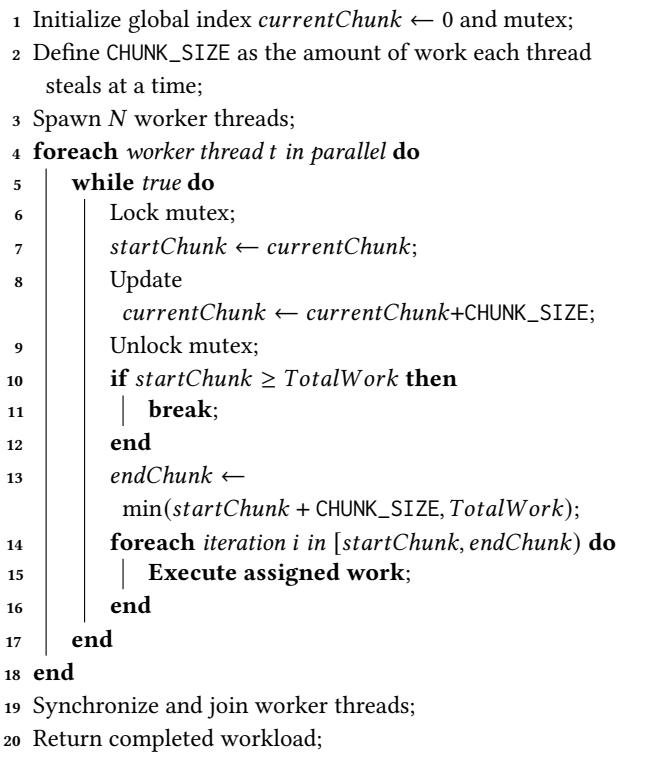
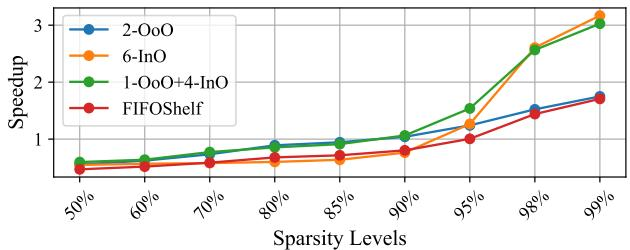
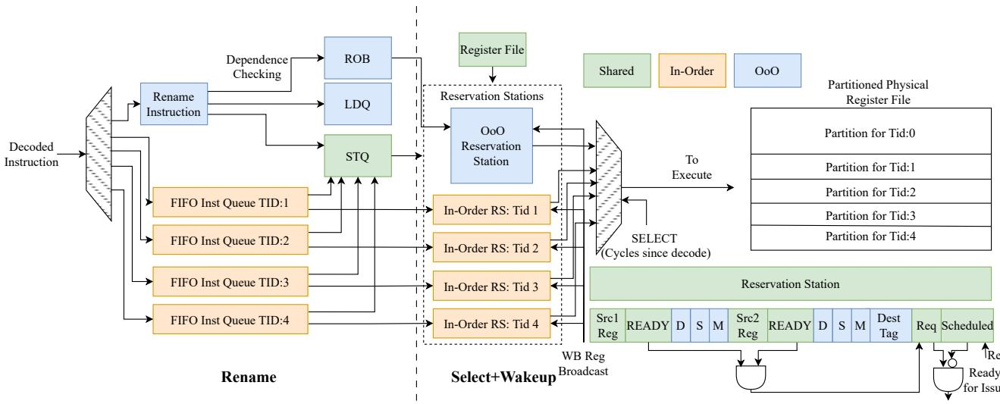
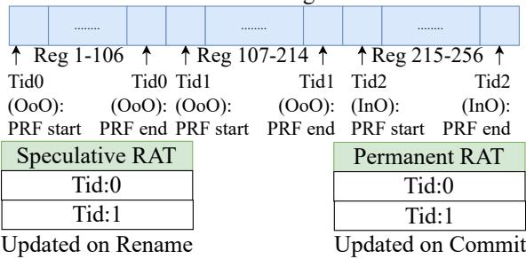
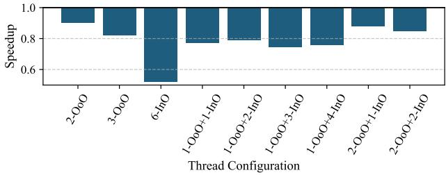

SHADOW: Simultaneous Multi-Threading Architecture with Asymmetric Threads 论文解析¶
0. 论文基本信息¶
作者 (Authors)
- Ishita Chaturvedi (Princeton University)
- Bhargav Reddy Godala (AheadComputing / Princeton University)
- Abiram Gangavaram (Princeton University)
- Daniel Flyer (Princeton University)
- Tyler Sorensen (Microsoft / University of California Santa Cruz)
- Tor M. Aamodt (University of British Columbia)
- David I. August (Princeton University)
发表期刊/会议 (Journal/Conference)
- 58th IEEE/ACM International Symposium on Microarchitecture (MICRO '25)
发表年份 (Publication Year)
- 2025
1. 摘要¶
目的
- 解决传统CPU在处理具有不规则稀疏性和不可预测内存访问模式的应用时，难以在**指令级并行性 (ILP)和线程级并行性 **(TLP)之间取得平衡的问题。
- 克服现有**同时多线程 (SMT)架构的局限性，例如只能在纯乱序 (OoO)或纯顺序 **(InO)模式间切换（如MorphCore），或需要复杂的跨路径推测机制（如FIFOShelf）。
- 提出一种能在单个核心内同时执行OoO和InO线程的非对称SMT架构，以动态适应工作负载变化，最大化资源利用率，并保持极低的硬件开销。
方法
- 设计并实现了名为SHADOW的新型CPU微架构，其核心是在一个物理核心内集成一个深度OoO线程和多个轻量级InO线程。
- 硬件层面:
- OoO线程负责挖掘深度ILP，拥有完整的重排序缓冲区（ROB）、保留站（RS）和寄存器重命名能力。
- InO线程执行严格顺序、非推测性的代码，绕过重命名和ROB，使用轻量级FIFO队列，显著降低硬件开销。
- 共享的物理寄存器文件（PRF）在运行时根据配置（如1 OoO + 4 InO）进行分区。
- 分支预测、加载/存储队列等资源也根据线程类型进行差异化配置。
- 软件层面:
- 采用**软件工作窃取 **(software work stealing)机制（见Algorithm 1）来动态分配任务。线程在完成当前任务块后，会主动从全局任务池中“窃取”新任务。
- 该机制天然地实现了负载均衡：当OoO线程因高缓存未命中率而IPC下降时，空闲的InO线程会自动接管更多工作，反之亦然。
- 
Algorithm 1: SHADOW's Work Stealing Mechanism
- 评估方法:
- 在gem5模拟器中基于高性能ARM Grace核心实现SHADOW模型。
- 使用包括SpMM（稀疏矩阵乘法）、CRONO和Rodinia在内的9个多样化基准测试程序进行评估。
- 对比基线包括纯OoO核心、MorphCore和FIFOShelf。
结果
- 性能提升:
- 在9个基准测试上，SHADOW相比纯OoO CPU实现了最高3.16倍的加速比，平均提升1.33倍。
- 在高缓存未命中率的工作负载（如95%稀疏度的SpMM）上，混合配置（1 OoO + 4 InO）显著优于纯OoO或纯InO配置。
- 
Figure 13: Performance of SHADOW with varying degrees of sparsity for an 8 wide CPU over 1 OoO thread.
- 动态适应性:
- 工作窃取机制能有效根据IPC动态调整各线程的工作量。在低稀疏度时，OoO线程承担大部分工作；在高稀疏度时，工作负载更均匀地分配给所有线程。

Figure 19: Distribution of work across threads with dynamic work stealing for various degrees of sparsity.
- 硬件开销:
- SHADOW仅引入了**1%**的面积和功耗开销，主要得益于InO线程省去了重命名和ROB等复杂逻辑。
- 关键硬件参数如下表所示：
| 组件 | 基线 (OoO) | SHADOW (1 OoO + 4 InO) | 开销 |
|---|---|---|---|
| **物理寄存器文件 **(PRF) | 256 Int / 192 FP | 256 Int / 192 FP (分区) | 0% |
| **重排序缓冲区 **(ROB) | 320 entries | 320 entries (OoO专用) | 0% |
| **保留站 **(RS) | 192 entries | 192 entries (分区) | 0% |
| 总面积/功耗 | 100% | ~101% | 1% |
结论
- SHADOW通过在单个核心内同时执行OoO和InO线程，成功地在ILP和TLP之间实现了动态、高效的平衡。
- 其创新的非对称SMT设计，结合简单的软件工作窃取机制，能够无缝适应从计算密集型到内存密集型的各种工作负载，尤其擅长加速具有不规则内存访问模式的稀疏应用。
- 该架构在仅增加**1%**硬件开销的前提下，显著提升了性能，为通用处理器在面对现代异构工作负载时提供了一种高效、低成本的解决方案。
2. 背景知识与核心贡献¶
研究背景与动机
- 现代重要应用（如深度学习、图计算、稀疏矩阵运算）常因不规则的稀疏性和不可预测的内存访问模式，在 Instruction-Level Parallelism (ILP) 和 Thread-Level Parallelism (TLP) 之间动态切换。
- 传统CPU架构存在根本性缺陷：
- Out-of-Order (OoO) 核心：擅长挖掘ILP，但在内存密集型、高缓存未命中率的工作负载下，其重排序缓冲区 (ROB) 和保留站 (RS) 会迅速被长延迟的内存请求占满，导致性能急剧下降。
- In-Order (InO) 核心：轻量级，可支持高TLP，但无法通过乱序执行隐藏内存延迟，在需要高ILP的场景下效率低下。
- 现有SMT方案无法有效平衡ILP与TLP：
- 对称SMT（如Intel）：通常只支持少量（如2个）同构的OoO线程，无法充分利用TLP。
- 模式切换架构（如MorphCore）：在纯OoO模式和纯InO模式间切换，无法同时利用ILP和TLP，当工作负载特性介于两者之间时会造成资源浪费。
- 指令级混合架构（如FIFOShelf, FIFOrder）：通过复杂的硬件机制在单线程内将指令分流到OoO和InO路径，引入了高昂的跨路径依赖跟踪和错误恢复开销。

Figure 4: Breakdown of IPC contributions from all threads for 95% sparse SpMM.

Figure 3: Speedup of 95%-sparse SpMM on a single OoO thread, showing diminishing returns from enlarging the ROB/RS or LSQ sizes.
核心贡献
- 提出了 SHADOW，这是首个不对称SMT (Asymmetric SMT) 核心，能够在同一个物理核心上同时并发执行OoO线程和多个InO线程，从而动态、无缝地平衡ILP与TLP。
- SHADOW的核心创新在于其线程粒度的异构执行模型：
- OoO线程：负责在计算密集或缓存友好阶段挖掘深度ILP。
- 轻量级InO线程：在内存密集、高缓存未命中阶段，以极低的硬件开销（无重命名、无ROB）维持高TLP，持续处理任务。
- 动态工作分配：通过一个简单的软件工作窃取 (software work stealing) 机制（如Algorithm 1所示），让线程根据自身执行效率（IPC）自动竞争工作块，无需复杂的硬件调度器。高IPC的OoO线程自然获取更多工作，而当其因内存停顿而变慢时，InO线程便能接管更多负载。
Algorithm 1: SHADOW's Work Stealing Mechanism

Figure 1: SHADOW dynamically redistributes work as IPC changes.High ILP skews execution toward the OoO thread, while a low IPC distributes the work more evenly. SHADOW adapts to the application without software intervention.
- 实现了卓越的性能与能效比：
- 在九个多样化基准测试中，SHADOW相比传统的OoO CPU，实现了最高3.16倍的加速比和1.33倍的平均性能提升。
- 其硬件开销极低，仅引入1%的面积和功耗 overhead，远优于增加独立核心或其他复杂方案。
| 对比维度 | 传统OoO SMT | MorphCore | FIFOShelf/FIFOrder | SHADOW |
|---|---|---|---|---|
| 执行模式 | 同构OoO | 模式切换 (OoO 或 InO) | 指令分流 (单线程内) | 并发异构 (OoO 和 InO) |
| ILP/TLP平衡 | 差 | 中等 (非同时) | 好 (但开销大) | 优秀 (同时且高效) |
| 硬件复杂度 | 低 | 中等 | 高 (跨路径逻辑) | 低 (线程级分区) |
| 面积/功耗开销 | 基准 | 较高 | 高 | 仅1% |
3. 核心技术和实现细节¶
0. 技术架构概览¶
整体架构概述
SHADOW 是一种不对称的 SMT (Asymmetric SMT) 核心架构，其核心思想是在单个物理核心内同时执行 out-of-order (OoO) 和 in-order (InO) 两种类型的线程，以动态平衡 instruction-level parallelism (ILP) 与 thread-level parallelism (TLP)。
- OoO 线程负责在计算密集、缓存命中率高的阶段深度挖掘 ILP。
- 轻量级的 InO 线程则在内存密集、高缓存缺失率的阶段高效扩展 TLP，且不引入 OoO 执行的复杂性和开销（如寄存器重命名、推测执行）。
- 该架构通过一个简单的软件工作窃取 (software work stealing) 机制实现动态负载均衡，无需复杂的硬件协调逻辑。
Figure 1: SHADOW dynamically redistributes work as IPC changes.High ILP skews execution toward the OoO thread, while a low IPC distributes the work more evenly. SHADOW adapts to the application without software intervention.
微架构设计细节
SHADOW 的微架构基于一个高性能的 OoO 核心进行扩展，关键修改点如下：
-
Fetch & Decode 阶段:
- 支持最多 6 个 SMT 上下文，每个上下文拥有独立的 PC。
- OoO 线程拥有独立的 Return Address Stack (RAS) 用于分支预测。
- InO 线程不进行分支预测，遇到分支时会暂停取指，直到分支解析完成。
- 使用 ICOUNT 策略选择线程进行取指和解码，并在资源占用相当时优先 OoO 线程以最大化 ILP。
-
Rename & Issue 阶段:
- OoO 指令：正常进行寄存器重命名，消除伪依赖，并分配到 Reorder Buffer (ROB) 和 Reservation Station (RS)。
- InO 指令：绕过重命名，直接进入一个每线程独立的轻量级 FIFO 队列。它们不占用 ROB 条目。
- RS 资源分区：运行时对 RS 进行分区，每个 InO 线程固定分配一个条目，其余条目由 OoO 线程均分。
- 依赖追踪：InO 线程使用一个每线程的记分板 (scoreboard) 来追踪依赖，而非复杂的 CAM 广播。

Figure 6: Microarchitecture of the fetch and decode stage configured with 1 OoO and 4 InO threads.

Figure 7: SHADoW's microarchitecture of the Rename and Wakeup+Select stages configured with 1OoO and 4 inO threads
- Register File 分区:
- 物理寄存器文件 (PRF) 在上下文切换时被动态分区。
- 每个 InO 线程被分配数量等于架构寄存器文件 (ARF) 大小的寄存器。
- 剩余的寄存器由 OoO 线程共享。
- OoO 线程采用类似 Pentium 4 的重命名方案，使用 Register Alias Table (RAT) 来管理推测状态和架构状态。

Figure 8: Register File partitioning in SHADOW.
-
Load/Store Queues (LSQ):
- OoO 线程：拥有专用的 LSQ 分区，支持推测性加载。
- InO 线程：不使用 Load Queue，执行保守的非推测性加载；每个 InO 线程分配少量 Store Queue 条目。
-
Commit 阶段:
- 只有 OoO 线程需要提交 (commit)，因为它们是推测执行的。
- InO 线程是非推测性的，指令在执行完成后即生效，无需提交阶段。

Figure 5: Microarchitecture design of SHADOW configured with 1 OoO and 4 InO threads.
动态工作分配与配置
- 软件工作窃取: 应用程序通过一个简单的 Pthreads 工作窃取循环（见 Algorithm 1）来分配任务。OoO 线程在 IPC 高时自然窃取更多工作，而当其因内存停顿导致 IPC 下降时，InO 线程会接管更多工作负载。
Algorithm 1: SHADOW's Work Stealing Mechanism
- 运行时可配置性: 通过一个特殊的
shdw_cfg指令，操作系统可以在上下文切换时动态设置 OoO 和 InO 线程的数量（例如 1 OoO + 4 InO, 2 OoO + 2 InO 等），配置信息存储在进程控制块 (PCB) 中。
硬件开销与性能
SHADOW 在保持高性能的同时，实现了极低的硬件开销。
| 开销类型 | 数值 | 说明 |
|---|---|---|
| 面积开销 | ~1% | 主要来自额外的 FIFO 队列、记分板和多路复用器，PRF、ROB、RS 等主要结构大小不变。 |
| 功耗开销 | ~1% | 与面积开销一致。 |
| 频率影响 | ~2.5% 降低 | 与 MorphCore 类似，源于关键路径上增加的多路复用器。 |

Table 4: Hardware overhead of SHADOW
在性能方面，SHADOW 相比传统 OoO 核心，在多样化的基准测试中实现了显著提升：
- 最高加速比: 3.16X
- 平均加速比: 1.33X
1. 异构线程并发执行 (Asymmetric Thread Co-execution)¶
核心实现原理
SHADOW 的核心创新在于其 异构线程并发执行 (Asymmetric Thread Co-execution) 模型，它打破了传统 SMT 中所有线程必须采用相同微架构策略（全为 OoO 或全为 InO）的限制。其实现原理并非通过复杂的指令流动态重定向或模式切换，而是通过在硬件层面为不同类型的线程提供专用的、隔离的执行路径。
- 线程类型划分：软件在运行时通过一个特殊的
shdw_cfg指令向硬件声明线程配置（例如，1个 OoO 线程 + 4个 InO 线程）。操作系统将此配置保存在进程控制块（PCB）中，并在上下文切换时应用。 - 硬件资源分区：硬件根据配置对关键共享资源进行静态或半静态分区：
- 寄存器文件 (Register File)：如
Figure 8: Register File partitioning in SHADOW.
所示，InO 线程直接使用 Architectural Register File (ARF) 的映射，每个 InO 线程分配固定数量的物理寄存器。剩余的物理寄存器则在 OoO 线程间共享，并通过 Register Alias Table (RAT) 进行重命名管理。 - 重排序缓冲区 (ROB)：仅 OoO 线程的指令会分配 ROB 条目，用于支持乱序执行和精确异常。InO 线程完全绕过 ROB。 - 保留站 (Reservation Station, RS)：RS 被划分为两个区域。OoO 线程的指令进入传统的、支持复杂依赖唤醒的 RS。每个 InO 线程则被分配一个轻量级的 FIFO 队列（本质上是单个或少量 RS 条目），其依赖检查通过简单的 scoreboard 机制完成，避免了昂贵的 CAM 比较。
- 流水线阶段协同：如
Figure 5: Microarchitecture design of SHADOW configured with 1 OoO and 4 InO threads.
所示，两种线程在前端（Fetch/Decode）共享资源，但在 Rename 阶段分道扬镳。OoO 指令进行重命名后进入 RS，而 InO 指令则直接进入其专属 FIFO。在后端（Execute/Writeback），它们共享执行单元，但只有 OoO 指令需要经过 Commit 阶段。
动态工作负载分配算法
SHADOW 本身不包含复杂的硬件调度器来分配工作。其动态适应性源于一个简单的 软件工作窃取 (Software Work Stealing) 机制，该机制与异构硬件天然契合。
- 算法流程 (Algorithm 1)：
- 应用程序将总工作负载划分为多个 Chunk。
- 所有线程（无论 OoO 或 InO）在一个循环中运行。
- 每次循环，线程通过获取一个全局锁来“窃取”一个 Chunk 的索引。
- 线程处理完分配到的 Chunk 后，立即返回循环顶部尝试窃取下一个 Chunk。
- 输入输出关系：
- 输入：一个可并行化的任务（由多个独立或弱依赖的 Chunk 组成）；一个指定的
CHUNK_SIZE。 - 输出：任务被所有线程（OoO 和 InO）共同完成。
- 输入：一个可并行化的任务（由多个独立或弱依赖的 Chunk 组成）；一个指定的
- 在整体中的作用：这个看似简单的机制是 SHADOW 实现 动态 ILP-TLP 平衡的关键。当 OoO 线程因高缓存未命中率而 IPC（Instructions Per Cycle）下降时，它窃取新 Chunk 的速度变慢。此时，轻量级的 InO 线程（不受长延迟停顿影响）能更快地完成自己的 Chunk 并窃取更多工作，从而自动承担起更多的计算负载。反之，在计算密集型场景下，高 IPC 的 OoO 线程会主导工作窃取。这种负载分配是 去中心化 且 自适应 的，无需硬件干预。
关键参数设置与配置
SHADOW 的性能高度依赖于正确的线程配置，这需要根据工作负载特性进行选择。
- 主要配置参数：
<#OoO>, <#InO>，即 OoO 线程数和 InO 线程数。总和受物理寄存器总数限制。 - 典型配置示例：
- 1 OoO + 4 InO：这是论文中针对 内存密集型 工作负载（如高稀疏度 SpMM）的最优配置，能在 ILP 和 TLP 之间取得最佳平衡。
- 1 OoO：适用于 计算密集型 且 缓存敏感 的工作负载（如 Dense Matrix Multiplication），避免多线程带来的缓存冲突。
- 3 OoO：适用于能从更高 ILP 中受益且 L2 未命中率能因 TLP 而降低的工作负载（如 TSP）。
- 其他重要参数：
- CHUNK_SIZE：工作窃取的粒度。较小的值（如 1）能实现更精细的负载均衡，但会增加锁竞争开销。论文指出，对于混合配置，
CHUNK_SIZE=1通常能获得最佳性能。
- CHUNK_SIZE：工作窃取的粒度。较小的值（如 1）能实现更精细的负载均衡，但会增加锁竞争开销。论文指出，对于混合配置，
性能优势与硬件开销
通过这种设计，SHADOW 在极低的硬件成本下实现了显著的性能提升。
- 性能指标：在九个多样化基准测试中，SHADOW 相比纯 OoO 核心实现了最高 3.16X 的加速比和 1.33X 的平均加速比。
- 硬件开销：如
Table 4: Hardware overhead of SHADOW
所示，由于 InO 线程复用了大部分执行单元并省略了重命名、ROB 等复杂结构，其面积和功耗开销仅为 1%。
- 与竞品对比：
| 架构 | 核心思想 | 主要缺点 | SHADOW 优势 |
|---|---|---|---|
| MorphCore | 在 OoO 模式和 InO 模式间切换 | 无法同时利用 ILP 和 TLP | 并发执行，无缝适应 |
| FIFOShelf/FIFOrder | 在单线程内将指令分流到 OoO/InO 路径 | 需要复杂的跨路径依赖跟踪和恢复逻辑 | 线程级分区，无推测开销，硬件简单 |

Figure 9: Impact of adding an InO Thread to an OoO system: An illustrative assembly example.
该图直观地展示了异构并发执行的优势。在纯 OoO 执行中，一个长延迟的 Load 指令会阻塞整个 ROB，即使后续指令已准备好也无法发射。而在 SHADOW 的 1-OoO+1-InO 配置下，InO 线程的指令完全绕过 ROB，可以持续利用空闲的执行单元，从而显著提升了 Memory-Level Parallelism (MLP) 和整体吞吐量。
2. 动态工作窃取机制 (Dynamic Work Stealing Mechanism)¶
实现原理与核心思想
- SHADOW 的动态工作窃取机制是一种去中心化 (decentralized) 的软件策略，完全在用户空间 (user space) 实现，无需硬件干预或复杂的 OS 调度器支持。
- 其核心思想是利用 OoO 线程和 InO 线程在不同 workload 特征下的固有执行效率差异，让线程通过一个简单的、竞争性的协议来“贪婪地”获取工作。
- 当 ILP 高、缓存命中率高时，OoO 线程的 IPC (Instructions Per Cycle) 远高于 InO 线程，因此它能更快地完成手头工作并返回去窃取下一块任务，从而自然地承担了大部分负载。
- 当 内存瓶颈严重、L2 cache misses 高时，OoO 线程因 ROB (Reorder Buffer) 被长延迟的 load 指令填满而停滞，其 IPC 急剧下降。此时，轻量级的 InO 线程不受 speculative overhead 影响，能够持续地窃取并处理新任务，维持系统吞吐量。
- 这种负载再分配是自适应 (adaptive) 和涌现式 (emergent) 的，源于线程独立的行为，而非中央控制器的指令。
算法流程与参数设置
- 该机制通过标准的 Pthreads 库实现，其伪代码如 Algorithm 1 所示。
- 关键参数是
CHUNK_SIZE，它定义了每次窃取的工作单元大小（例如，循环迭代的次数）。- 较小的
CHUNK_SIZE（如 1）能实现更精细的负载均衡，但会增加锁竞争开销。 - 较大的
CHUNK_SIZE会降低锁竞争，但可能导致负载不均，尤其是在 workload 特征快速变化时。
- 较小的
- 算法流程如下：
- 主线程初始化一个全局的
currentChunk计数器和一个互斥锁。 - 工作线程（无论是 OoO 还是 InO 类型）被创建后，进入一个无限循环。
- 在循环中，线程首先获取锁，以原子方式读取并更新
currentChunk，从而获得自己本次要处理的 chunk 索引。 - 线程释放锁后，独立执行分配给它的
CHUNK_SIZE个任务单元。 - 执行完毕后，线程立即回到循环起点，尝试窃取下一个 chunk，直到所有工作完成（
currentChunk超出总工作量）。
- 主线程初始化一个全局的
Algorithm 1: SHADOW's Work Stealing Mechanism
输入输出关系及在整体架构中的作用
- 输入: 一个可被分割成多个独立或近似独立单元的并行 workload（例如，SpMM 中的矩阵行）。
- 输出: 一个根据实时执行效率（由 ILP/TLP 特性决定）动态调整的工作负载分配方案。
- 在 SHADOW 架构中的作用:
- 桥梁作用: 它是连接上层应用并行模型与底层不对称硬件（OoO + InO lanes）的关键桥梁。没有它，硬件的不对称性无法被有效利用。
- 简化编程模型: 对程序员而言，只需将 workload 按 chunk 分割，并使用标准的 Pthreads 或类似 runtime（如 Intel TBB, Cilk, OpenMP），SHADOW 就能自动优化执行。这保持了通用可编程性 (general-purpose programmability)。
- 实现动态平衡: 它是 SHADOW 能够“无缝且高效地适应 workload 变化”的核心驱动力，使得 ILP-TLP balancing 成为可能。
效果验证与数据支撑
- Figure 19 直观地展示了该机制的效果。随着 SpMM sparsity 增加（从 50% 到 98%），OoO 线程处理的迭代次数占比从主导地位逐渐下降，最终与 InO 线程趋于均等，完美体现了动态再分配。
- 实验表明，对于 95% sparse 的 SpMM，
CHUNK_SIZE的选择对混合配置（1 OoO + 4 InO）有一定影响：从CHUNK_SIZE=1时的 1.53x speedup 下降到CHUNK_SIZE=50时的 1.25x，证明了细粒度窃取的优势。
Figure 19: Distribution of work across threads with dynamic work stealing for various degrees of sparsity.
潜在挑战与考量
- 锁竞争 (Lock Contention): 当大量线程同时完成工作并试图窃取新 chunk 时，对
currentChunk锁的竞争会成为瓶颈，尤其是在CHUNK_SIZE很小的情况下。 - 缓存性能影响: 动态的工作分配可能导致数据在不同线程间迁移，破坏数据局部性，对 cache-sensitive 的 workload 产生负面影响（如 Section 5.1 所述）。
- 操作系统透明性: OS scheduler 将每个 pthread 视为普通内核线程，对 SHADOW 内部的 OoO/InO 不对称性一无所知。这意味着 OS 的调度决策（如 core migration）可能与 SHADOW 的优化目标不一致。目前的设计假设单个应用独占一个 SHADOW 核心。
3. 轻量级顺序线程设计 (Lightweight In-Order Threads)¶
轻量级顺序线程（In-Order Threads）的核心设计原理
SHADOW架构中的轻量级顺序线程（In-Order, InO）是其能够以极低开销实现高TLP的关键。其设计理念是通过大幅简化硬件逻辑，避免传统OoO执行带来的复杂性和资源消耗。
- 绕过关键OoO结构：InO线程在流水线中完全绕过重命名（Rename）阶段和重排序缓冲区（ROB）。这意味着它们不参与寄存器重命名，也不需要为每条指令分配ROB条目来管理推测状态和提交。
- 使用轻量级FIFO队列：解码后的InO指令被直接送入一个per-thread circular FIFO queue（每个线程一个循环FIFO队列），该队列在空闲时可以断电以节省能耗。这个FIFO替代了ROB的功能，用于暂存待发射的指令。
- 非推测性执行：InO线程不进行任何推测执行（speculation）。分支指令不会被预测，而是会阻塞取指直到分支结果确定。同样，加载指令也是保守执行的，必须等待TLB命中后才能继续，以避免因重放（replay）导致的错误状态。
- 简化的依赖跟踪：为了在不使用重命名的情况下处理数据依赖，每个InO线程配备了一个per-thread scoreboard（每个线程一个记分板）。这是一个多端口的位表，用于跟踪源寄存器的就绪状态。当一条指令的所有源操作数都就绪时，它才会被标记为可执行。
- 精简的保留站（RS）分配：在运行时，保留站（RS）会被动态划分。每个InO线程仅被分配一个RS条目，这极大地降低了硬件复杂度。相比之下，OoO线程会共享剩余的大部分RS资源。
Figure 7: SHADoW's microarchitecture of the Rename and Wakeup+Select stages configured with 1OoO and 4 inO threads
在整体流水线中的作用与输入输出关系
InO线程的设计使其能够与OoO线程无缝协同工作，共同提升核心的整体资源利用率。
- 输入：来自独立程序计数器（PC）的指令流。每个InO线程拥有自己的PC和取指队列，但不包含返回地址栈（RAS）等用于推测的结构。
- 处理流程：
- 取指与译码：与其他SMT线程一样，通过ICOUNT策略从指令缓存（ICache）中轮流取指并译码。
- 指令放置：译码后的指令绕过重命名，直接进入其专属的FIFO队列，并根据静态物理寄存器文件（PRF）映射获取操作数。
- 唤醒与选择：通过记分板检查依赖。一旦依赖满足，指令便占用其唯一的RS条目，并请求执行单元。
- 执行与写回：与OoO线程共享执行单元（ALU等）和写回旁路网络，从PRF读取操作数并写回结果。
- 提交：由于是非推测执行，InO线程没有提交（Commit）阶段。指令一旦写回，其结果即为最终的、正确的架构状态。
- 输出：对物理寄存器文件（PRF）的更新。这些更新是即时且不可逆的。
- 在SHADOW中的作用：
- 填补OoO空窗期：当OoO线程因长延迟的cache miss而停滞，其ROB被占满无法发射新指令时，InO线程可以利用空闲的执行单元继续处理任务，从而维持核心的吞吐量。
- 高效利用TLP：对于具有大量thread-level parallelism (TLP) 的工作负载（如SpMM），多个InO线程可以并行处理独立的数据块，而无需承担OoO硬件的开销。
- 降低硬件成本：通过复用OoO核心的大部分后端资源（执行单元、PRF、Cache），仅增加极少量的专用逻辑（FIFO、记分板），实现了仅1%的面积和功耗开销。
Figure 9: Impact of adding an InO Thread to an OoO system: An illustrative assembly example.
硬件开销与资源配置细节
InO线程的轻量化设计直接体现在其极低的硬件资源占用上。
- 寄存器文件（Register File）分配：InO线程仅使用与架构寄存器文件（ARF） 数量相等的物理寄存器。例如，如果ARF有32个整数寄存器，那么每个InO线程就分配32个物理寄存器。剩余的物理寄存器则由OoO线程共享。
- 无重命名开销：省去了重命名表（RAT）、空闲列表（Free List）以及相关的CAM（内容寻址存储器）比较逻辑，这是OoO设计中最复杂的部分之一。
- 精简的Load/Store处理：InO线程不使用加载队列（Load Queue），其加载指令只检查存储队列（Store Queue）以确保正确性。每个InO线程仅分配5个存储队列（Store Queue） 条目。
- 无分支预测单元：InO线程的分支预测逻辑被完全移除，进一步简化了前端设计。
下表总结了SHADOW引入InO线程所带来的主要硬件改动和开销：
| 组件 | OoO线程行为 | InO线程行为 | 硬件影响 |
|---|---|---|---|
| 重命名 (Rename) | 执行寄存器重命名 | 绕过 | 移除InO的重命名逻辑 |
| ROB | 每条指令分配条目 | 不使用 | InO不消耗ROB资源 |
| 指令窗口 | 大型ROB/RS | Per-thread FIFO | 增加小型FIFO队列 |
| 依赖跟踪 | 通过Tag广播 | Per-thread Scoreboard | 增加简单记分板 |
| 推测执行 | 支持 | 不支持 | 移除InO的推测和回滚机制 |
| 分支预测 | 支持 | 不支持 | 移除InO的分支预测器 |
| 加载队列 | 使用 | 不使用 | InO不消耗Load Queue资源 |
| 提交 | 需要提交阶段 | 无提交阶段 | 简化提交逻辑 |
这种设计使得SHADOW能够在几乎不增加成本的情况下，将一个强大的OoO核心转变为一个能同时高效处理ILP和TLP的混合引擎。
4. 运行时可重构资源分区 (Runtime-Configurable Resource Partitioning)¶
运行时可重构资源分区的实现原理
SHADOW 的核心创新在于其 Runtime-Configurable Resource Partitioning 能力，这使其能够根据应用需求动态调整 OoO 与 InO 线程的数量配比。该机制通过一个名为 shdw_cfg 的特殊指令触发，并在 上下文切换 (context switch) 时由操作系统协同完成。
-
触发与控制:
- 该过程由一个软件层面的 “delegate thread” 在
pthread创建或上下文切换时透明地发起。 - delegate thread 执行
shdw_cfg <#OoO>, <#InO>指令，明确指定所需 OoO 和 InO 线程的数量。 - 操作系统将此配置信息存储在进程控制块 (PCB) 中，以便后续恢复。
- 该过程由一个软件层面的 “delegate thread” 在
-
硬件重配置流程:
- 前端重置: 激活指定数量的 OoO 和 InO 线程对应的程序计数器 (PC)。
- 重命名表重配置: 将前
<#OoO>个硬件线程上下文分配给 OoO 线程，其余分配给 InO 线程。每个 OoO 线程维护独立的物理寄存器 (PR) 空闲列表。 - 执行资源分区: 根据指定的线程配置，动态划分后端关键结构，如 ROB 和 RS。
Figure 8: Register File partitioning in SHADOW.
关键共享资源的动态分区策略
物理寄存器文件 (PRF) 分区
- PRF 的分区是整个机制的基础，其总大小固定（例如，256 个整数寄存器和 192 个浮点寄存器）。
- InO 线程: 每个 InO 线程被分配数量等于 架构寄存器文件 (ARF) 大小的连续物理寄存器。它们不进行寄存器重命名，因此无需额外的映射开销。
- OoO 线程: 所有剩余的物理寄存器被平均分配给 OoO 线程。每个 OoO 线程使用 Register Alias Table (RAT) 来管理其专属的物理寄存器池，以支持推测执行。
- 分配公式: 若总物理寄存器数为 P，ARF 大小为 A，InO 线程数为 I，OoO 线程数为 O，则每个 OoO 线程获得
(P - A·I) / O个寄存器。
重排序缓冲区 (ROB) 与保留站 (RS) 分区
- ROB: 仅由 OoO 线程使用。当存在多个 OoO 线程时，ROB 被 静态分区 (statically partitioned)，以防止线程间争用。
- RS: 在运行时进行动态分区。
- 每个 InO 线程被分配 一个 RS 条目，用于其严格的顺序发射。
- 剩余的所有 RS 条目被平均分配给 OoO 线程，供其进行乱序调度。
加载/存储队列 (LSQ) 配置
- OoO 线程: 拥有专用的 LSQ 分区，支持推测性加载和存储。
- InO 线程: 不使用加载队列，执行保守的非推测性加载。每个 InO 线程被分配固定的 5 个 存储队列条目。
输入输出关系及在整体架构中的作用
-
输入:
- 应用程序通过
shdw_cfg指令提供的 期望的 OoO/InO 线程数量。 - 操作系统的 上下文切换事件。
- 应用程序通过
-
输出:
- 一个 完全重配置的 CPU 核心微架构状态，其前端、重命名逻辑和后端执行资源均按照新配置进行了划分。
- 一组准备好执行的硬件线程上下文，其中 OoO 线程具备完整的乱序执行能力，而 InO 线程则以极简的顺序方式运行。
-
在 SHADOW 架构中的作用:
- 实现动态适应性: 该机制是 SHADOW 能够 无缝适应 (seamlessly adapt) 从计算密集型到内存密集型工作负载变化的根本保障。它允许硬件资源在 ILP 和 TLP 之间进行最优分配。
- 支撑混合执行模型: 通过精确的资源隔离，确保了 OoO 和 InO 线程可以 并发执行 (concurrently execute) 而互不干扰，OoO 线程的推测失败不会影响 InO 线程。
- 维持低开销: 整个重配置过程仅在上下文切换时发生，避免了运行时的性能损失。同时，由于 InO 线程的硬件开销极低（如每个线程仅需一个 RS 条目），使得这种灵活性带来的 面积和功耗开销仅为 1%。
| 资源类型 | OoO 线程使用方式 | InO 线程使用方式 | 分区策略 |
|---|---|---|---|
| 物理寄存器文件 (PRF) | 通过 RAT 重命名，使用分配到的私有池 | 直接映射到 ARF 大小的固定区域，无重命名 | 动态划分，基于 shdw_cfg 参数 |
| 重排序缓冲区 (ROB) | 用于指令排序、推测管理和提交 | 不使用 | 静态分区（仅在多 OoO 线程间） |
| 保留站 (RS) | 用于乱序调度和唤醒 | 每个线程使用 1 个 条目，顺序发射 | 运行时动态分区 |
| 加载/存储队列 (LSQ) | 完整的推测性加载/存储支持 | 无加载队列；5 个 固定存储条目 | 静态预留 |
当前限制与未来工作
- 多应用支持限制: 当前设计仅支持 单个多线程应用 或 多个单线程应用。若要支持多个并发的多线程应用，操作系统需要在不同应用的不对称配置间复杂地划分共享资源，这会极大增加调度和上下文切换的复杂性。
- 扩展性: 论文指出，将此模型扩展到 多核 (multi-core) 场景（例如，在 big.LITTLE 架构中将一个 big core 改造成 SHADOW core）是可行的，但跨多个 SHADOW 核心进行 OoO/InO 线程的负载均衡是一个留待未来研究的挑战。
4. 实验方法与实验结果¶
实验设置
- 模拟平台: 基于 gem5 系统仿真模式实现，模拟了一个高性能的 ARM Grace 核心。
- 基准配置: 详细的微架构参数见下表。该配置旨在代表一个现代高性能 OoO CPU。
| 组件 | 参数 |
|---|---|
| Fetch Width | 8 (for 8-wide CPU) / 4 (for 4-wide CPU) |
| Issue/Commit Width | 8 (for 8-wide CPU) / 4 (for 4-wide CPU) |
| ROB Size | 320 entries |
| Physical Integer Registers | 256 |
| Physical FP Registers | 192 |
| L1 I/D Cache | 64 KB, 4-way |
| L2 Cache | 2 MB, 16-way |
- 对比基线:
- 单线程 OoO 核心: 作为主要性能基准。
- MorphCore: 一种模式切换型 SMT 架构，在 2 个 OoO 线程和最多 8 个 InO 线程之间切换。
- FIFOShelf: 一种指令级混合执行架构，通过推测性地将指令路由到 OoO 或 InO 路径来工作。评估时对其进行了乐观建模（例如，加倍 ROB）以提供性能上限。
- 测试集: 包含 9 个多样化的基准测试程序，涵盖计算密集型（如 Dense Matrix Multiplication, Pathfinder）和内存密集型（如 SpMM, APSP, Backprop）工作负载。SpMM（稀疏矩阵乘法）被用作主要的分析案例，通过调整稀疏度（50% 到 99%）和矩阵大小来系统性地改变工作负载特性。
- SHADOW 配置: 评估了多种线程组合，包括
1 OoO,2 OoO,1 OoO + 4 InO, 和6 InO，以探索 ILP-TLP 平衡的最佳点。
结果数据分析
- 整体性能: 在九个基准测试上，SHADOW 相对于单线程 OoO 核心实现了最高 3.16X 的加速比和 1.33X 的平均加速比。
- 工作负载依赖性: SHADOW 的最佳配置高度依赖于工作负载特性。
- 高缓存未命中率工作负载（如 APSP, Backprop）: 混合配置（如
1 OoO + 4 InO）表现最佳，因为它能同时利用 OoO 线程的 ILP 和 InO 线程的 TLP，而不会像纯 OoO 那样因 ROB/RF 争用而饱和。
- 高缓存未命中率工作负载（如 APSP, Backprop）: 混合配置（如

Figure 11: Geometric mean performance of SHADOW configurations on high D-cache miss rate benchmarks from Table 2, normalized to a single-threaded OoO core.

Figure 12: Geometric mean performance of SHADOW configurations on low D-cache miss rate benchmarks from Table 2, normalized to a single-threaded OoO core.
- SpMM 案例研究:
- 稀疏度影响: 随着稀疏度增加（ILP 降低），纯 OoO 配置的性能急剧下降。
1 OoO + 4 InO配置在所有稀疏度下都保持领先，在 99% 稀疏度下达到 3.1X 加速比。
- 稀疏度影响: 随着稀疏度增加（ILP 降低），纯 OoO 配置的性能急剧下降。
Figure 13: Performance of SHADOW with varying degrees of sparsity for an 8 wide CPU over 1 OoO thread.
- **动态工作分配**: 通过软件工作窃取机制，工作负载能根据线程的即时吞吐能力（IPC）自动重新分配。在低稀疏度下，高 IPC 的 OoO 线程处理更多工作；在高稀疏度下，工作更均匀地分配给所有线程。
Figure 19: Distribution of work across threads with dynamic work stealing for various degrees of sparsity.

Figure 18: Breakdown of IPC contribution from each thread with varying degrees of sparsity over 1 OoO thread.
消融实验与开销分析
- 硬件开销: SHADOW 的设计极其精简。InO 线程绕过重命名和 ROB，仅使用轻量级 FIFO 队列。评估显示，相比基础 OoO 核心，SHADOW 仅引入 1% 的面积和功耗开销。
Table 4: Hardware overhead of SHADOW
- 与替代方案的对比:
- vs. MorphCore: SHADOW 的
1 OoO + 4 InO配置显著优于 MorphCore 的纯 OoO（2线程）或纯 InO（6线程）模式，因为它能同时利用两种并行性，而非在二者间切换。 - vs. FIFOShelf: SHADOW 的性能优于 FIFOShelf。这表明在线程粒度上进行划分（避免了跨路径依赖跟踪、推测唤醒等复杂机制）比在指令粒度上进行推测性路由更高效。
- vs. MorphCore: SHADOW 的
- 资源扩展的无效性: 实验表明，单纯扩大 OoO 核心的关键结构（如 ROB、RS、LSQ）对内存密集型工作负载（如 95% 稀疏的 SpMM）的收益递减，且带来巨大的面积和功耗成本。这凸显了引入 TLP（通过 InO 线程）的必要性。
Figure 3: Speedup of 95%-sparse SpMM on a single OoO thread, showing diminishing returns from enlarging the ROB/RS or LSQ sizes.
- 工作窃取机制的影响: 实验发现，
CHUNK_SIZE（每次窃取的工作块大小）对混合配置的性能有一定影响，但总体上该机制是鲁棒的，能有效适应不同的工作负载压力。